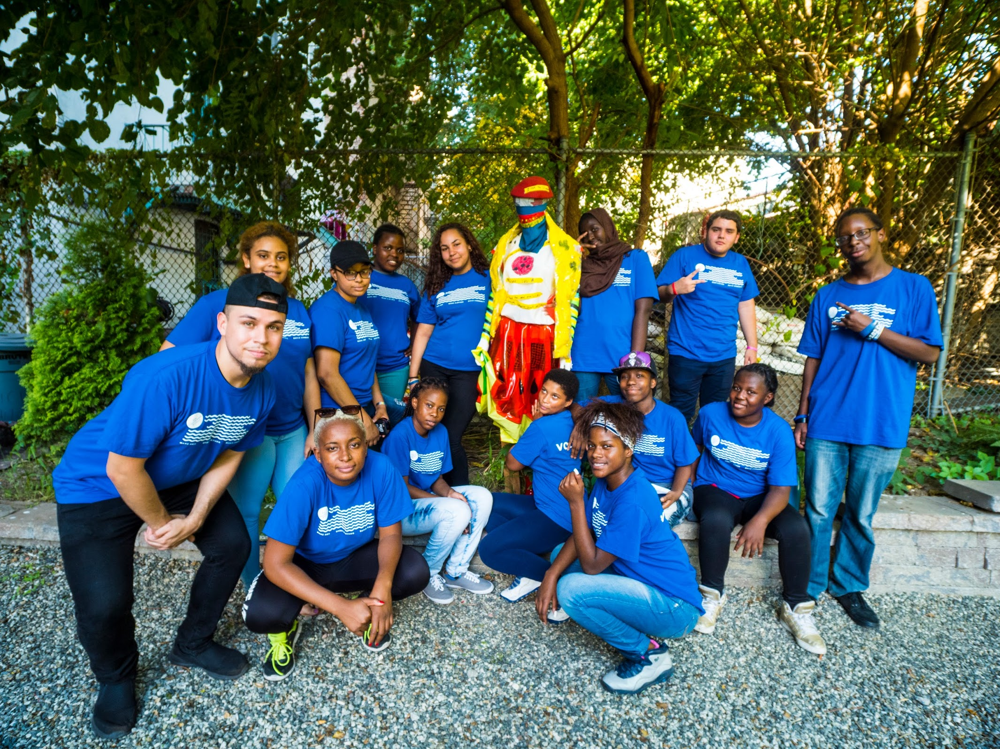

Scarecrows in the Garden
From July to September 2017 I worked with Stephanie Alvarado, Nikomeh Anderson, Alethea Pace, and Tijay Mohammed, as the Laundromat Project Create Change Fellows in the Bronx. Along with eight young artists from Kelly Street we built five scarecrows for the Kelly Street Community Garden as a means to scare away pests and protect a community resource. On September 16th we gathered for a story circle and workshop led by Elizabeth Rossi (another CC Fellow) to gather shared values that can be found on Kelly street. The kids spoke to the strength of their community and they shared this at the public unveiling of the scarecrows on the LP Field Day.

